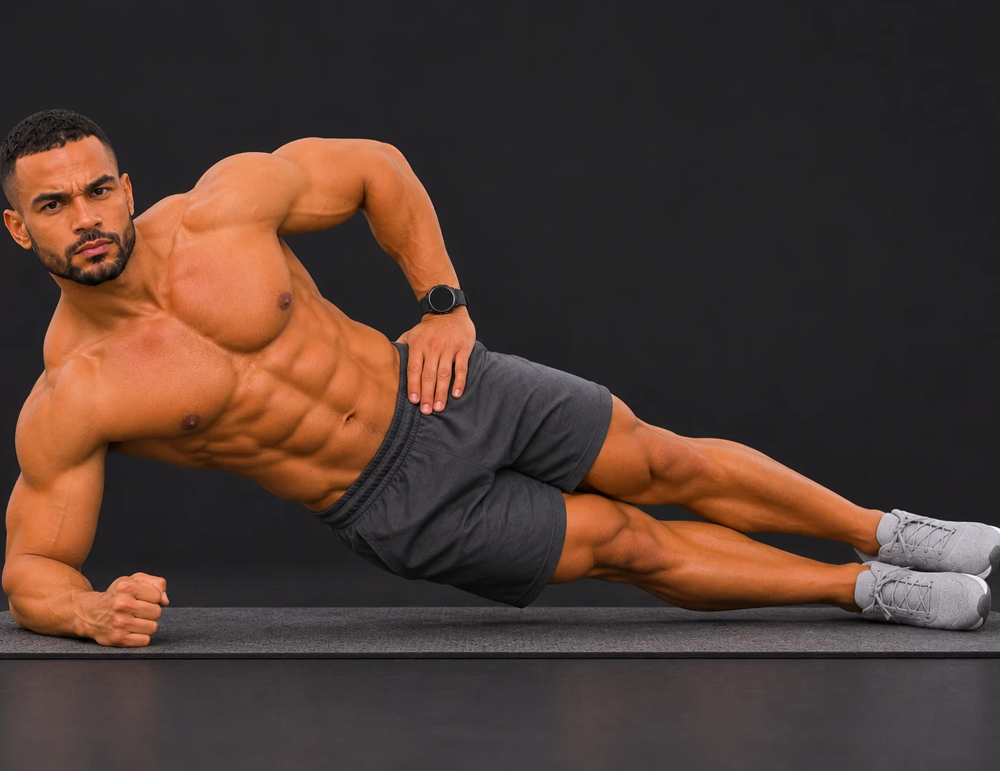

A Calistenia Militar reacende sua energia, sua libido e sua testosterona 🔥
A vitalidade de um homem nunca some, ela só precisa do estímulo certo para despertar.Você não precisa recorrer a reposição hormonal, remédios ou métodos invasivos. Descubra como desbloquear sua força bruta e desejo sexual instantaneamente de forma natural.
